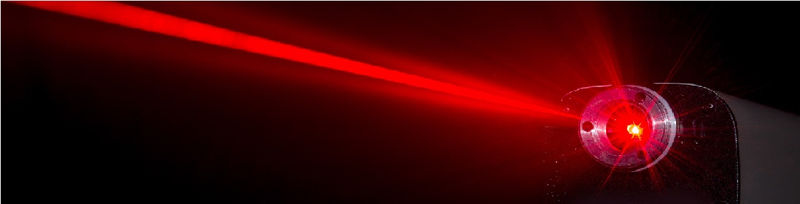
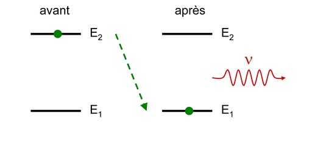
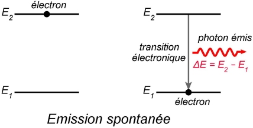
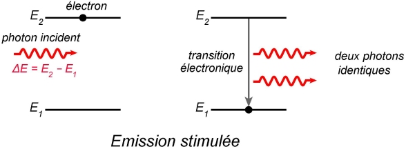
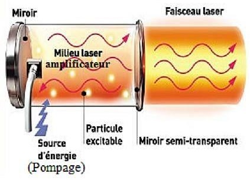
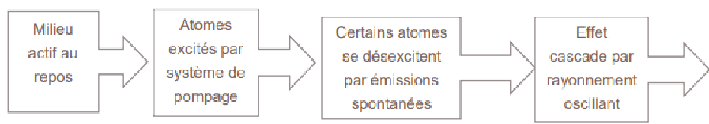
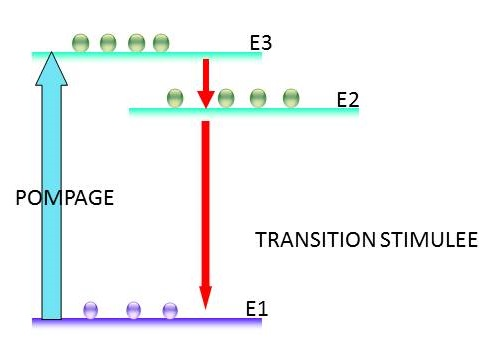

Fait par Les Indestructibles
Classe 731 du Lycée du parc

Le mot laser est l’abréviation de Light Amplification by Stimulated Emission of Radiation, dont la traduction est amplification par émission stimulée de radiations.Il s’agit d’un rayon laser est une lumière extrêmement concentrée.
Le principe de l'émission stimulée (ou émission induite) a été décrit en 1917 par Albert Einstein. En 1950, Alfred Kastler propose un procédé de pompage optique, qu'il confirme expérimentalement deux ans plus tard avec Brossel et Winter. Dans les années 1950, en exploitant ses connaissances et un processus imaginé par Einstein, l’émission stimulée,Townes imagine créer un flux de photons tous identiques, obtenus par amplification d’une onde électromagnétique. En quelque sorte, une photocopieuse à photons! Il fabrique alors l’appareil dit d’amplification de micro-ondes par émission stimulée de radiation, ou maser. C’est la première fois qu’on amplifie à l’identique un rayonnement électromagnétique. En 1955, Charles Townes prend un congé sabbatique au cours duquel il passe plusieurs mois au laboratoire ENS avec Albert Kastler. Dans ce laboratoire, Albert Kastler a utilisé le pompage optique pour orienter le moment magnétique des atomes avec la lumière polarisée. En 1958, Charles publie avec son nouveau collègue Artur Schawlow un article qui présente une nouvelle idée pour réaliser l'inversion de population: le pompage optique. Le pompage est déclenché par un flash de lumière blanche.On passe du Maser à Laser.
En mai 1960, Theodore Maiman décrit le fonctionnement du premier laser à rubis. Un an plus tard, Ali Javan met au point un laser au gaz (hélium et néon) puis en 1966, Peter Sorokin construit le premier laser à liquide. Les lasers trouvent très tôt des débouchés industriels. La première application fut réalisée en 1965 et consistait à usiner un perçage de 4,7 mm de diamètre et de 2 mm de profondeur dans du diamant avec un laser à rubis. Cette opération était réalisée en 15 min, alors qu’une application classique prenait 24 heures. Le laser devient un moyen de lecture en 1974, avec l'introduction des lecteurs de codes barres. En 1978, les laserdiscs sont introduits, mais les disques optiques ne deviennent d'usage courant qu'en 1982 avec le disque compact. Le laser permet alors de lire un grand volume de données. Le laser est utilisé dans plusieurs domaines tels que la médecine, l’industrie ou encore dans le monde du spectacle.
Mots clés a retenir: Maser, Laser, Charles Townes, Théodore Maiman, 1958 , 1960
Le LASER possède un certain nombre de carastéristiques :
-Monochromacité : L’analyse spectrale d’un laser montre spectre de raies d’une longueur d’onde précise et souvent unique.
-Directivité du faisceau : Le laser délivre un faisceau très peu élargi. L’observateur ne voit que le point d’impact mais pas son faisceau. Il est possible de le faire apparaître à l’aide de craie et poussière.
-Puissance surfacique, intensité lumineuse ou éclairement : Le laser peut transporter une intensité lumineuse très importante.
-Cohérence: La lumière du laser est produite par émission stimulée amplifiée, les photons produits sont donc cohérents.
LASER : Amplification de Lumière par Emission Stimulée de Radiation. C’est l’association d’un amplificateur et d’une cavité optique à deux miroirs
Absorption : Lorsqu’un atome reçoit un photon, il l’absorbe et monte en énergie (un électron change de couche). C’est le passage de l’état stable à l’état excité.

Emissions spontanées : un atome excité peut émettre un photon pour passer à l’état d’énergie inférieur. Ce dernier est émis dans une direction aléatoire.

Emissions stimulées (possible seulement par pompage optique) : un atome dans un état excité reçoit un photon et en émet 2 dans la même direction avec la même énergie que le premier photon pour retourner à un état stable

Le pompage optique : transmet de l’énergie sous forme de décharge électrique ou à l’aide d’un autre LASER aux atomes pour les exciter, il entraîne les émissions stimulées. Cette énergie peut être de source lumineuse ou électrique
Les photons cohérents : Au contraire, la lumière, les photons émis par la source laser ne sont pas distinguables : ils ont la même phase, même polarisation

-Milieu actif/ amplificateur : lieu où les atomes sont excités, il peut être solide liquide ou gazeux
-Système de pompage optique : envoie de l’énergie au milieu actif pour exciter les atomes
-Cavité optique dispositif qui permet à la lumière de passer plusieurs fois dans le milieu actif, afin que les atomes soient de plus en plus excités
Miroir réfléchissant : ne laisse pas passer les photons incidents
Miroir semi-réfléchissant : laisse passer 1 à 10 pourcent des photons (forme le rayon du laser) et réfléchit le reste de rayons
Si l’une des trois parties ne fonctionnent pas le laser n’émet plus de lumière
Le fonctionnement d’un LASER s’effectue en quatre étapes.

Il fonctionne en général par inversion de la population, c’est-à-dire, qu’il y est plus d’atome excité que d’atome stable dans le milieu actif. Réalisable grâce au système de pompage

Il existe 2 principaux type de fonctionnement
- obtention d’un rayon continue par envoie d’énergie en permanence par le système de pompage
- rayon laser très bref et plus puissant par manière pulsée.
Selon le milieu actif, le LASER n’est pas le même et adopte des particularités différentes.